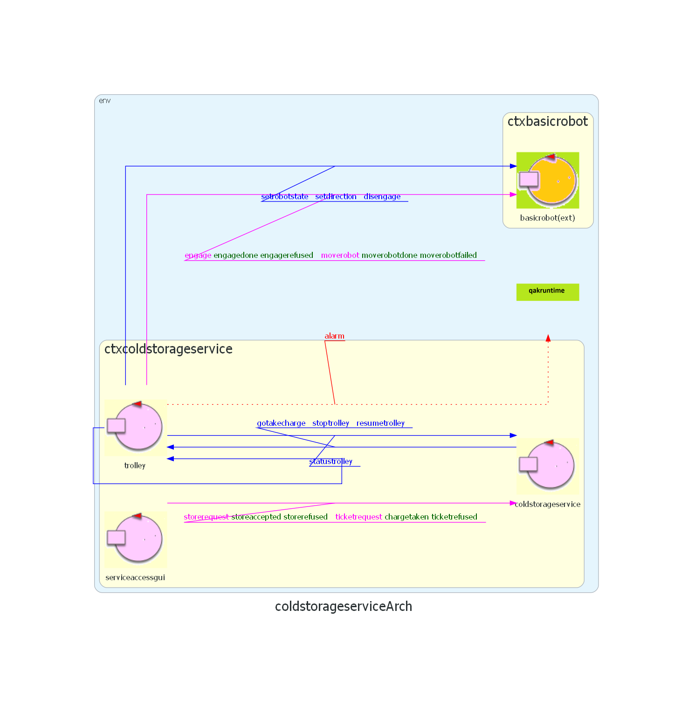
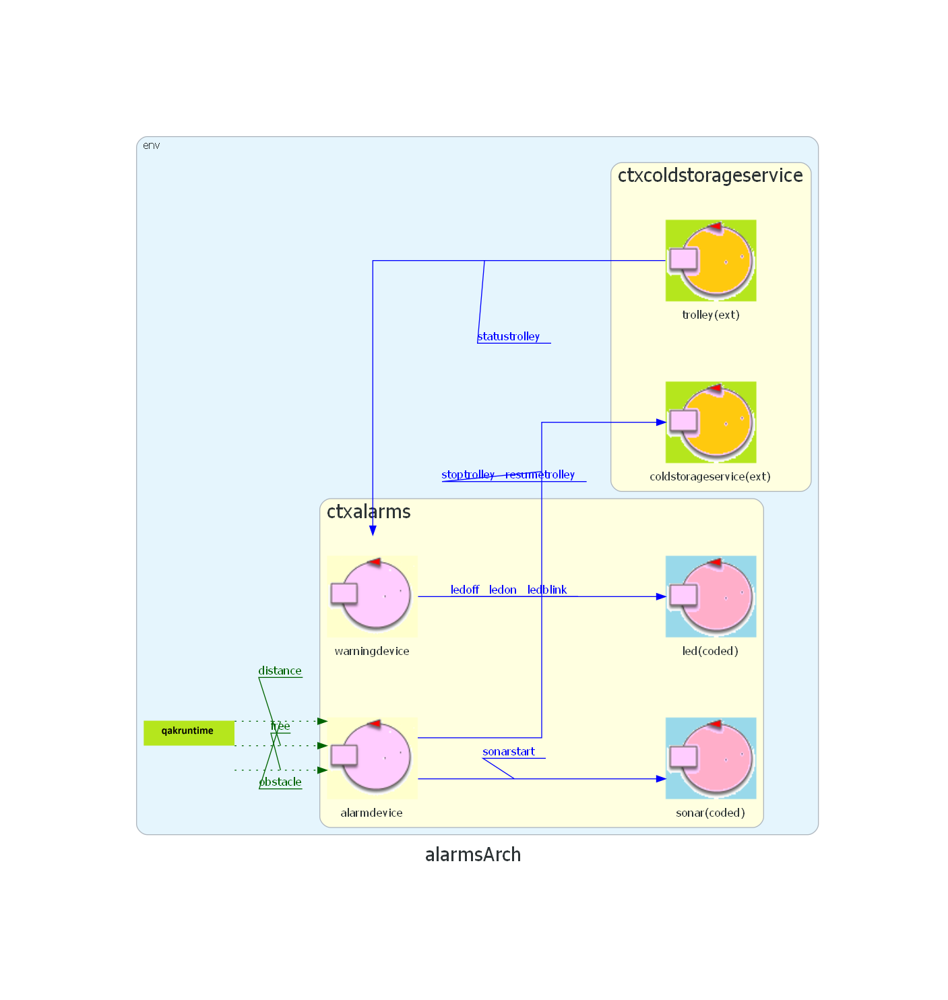
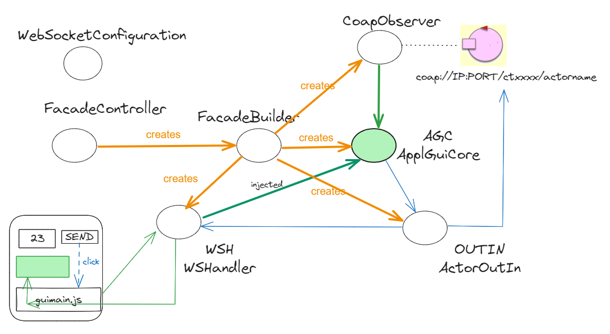
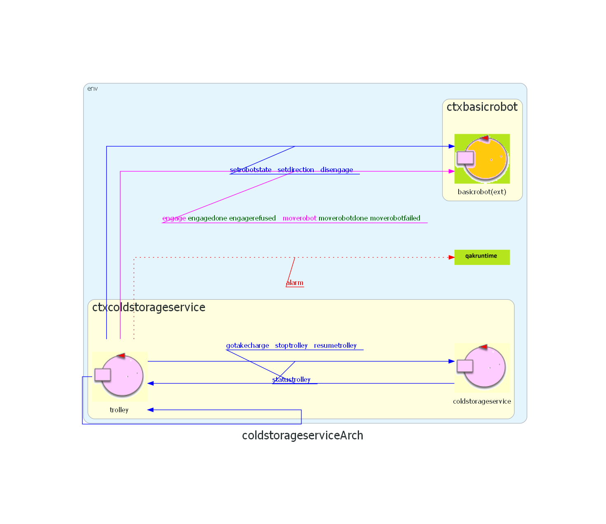

- By Letizia Mancini
- email: letizia.mancini3@studio.unibo.it
- GIT repo: https://github.com/llevtizia/coldstorageservice-iss2023
- matricola: 0000926656



User stories: in questo Sprint sarà analizzato il keypoint 1, in relazione all'uso della
The ServiceAccessGUI allows a human being to see the current current weigth of the material stored in the ColdRoom and to send to the ColdStorageService a request to store new FW kg of food. If the request is accepted, the services return a ticket that expires after a prefixed amount of time (TICKETTIME secs) and provides a field to enter the ticket number when a Fridge truck is at the INDOOR of the service.
L'interfaccia deve consentire all'utente di:
L'interfaccia deve sostituire il precedente QActor
Il committente mette a disposizione una serie di progetti:
L'interfaccia deve gestire e visualizzare chiaramente:
Nonostante non sia esplicitamente richiesto nei requisiti del testo, è ragionevole anticipare la necessità futura di un metodo per lo
Tale funzionalità comporterebbe:
L'architettura del sistema è progettata in modo modulare ed estensibile ma, dato che la funzionalità non è esplicitamente richiesta dai requisiti, si è scelto di non implementare nulla a riguardo in questa fase.
Per lo sviluppo dell'interfaccia web si è scelto di utilizzare SpringBoot, seguendo l'approccio dei progetti di riferimento forniti dal committente. La scelta presenta una serie di vantaggi:

La
ApplguiCore e ActorOutIn sono legati invece ai
| crea ApplSystemInfo e fissa il nome della applicazione al valore ApplSystemInfo.appName | |
| legge il file facadeConfig.json (usando QaksysConfigSupport) e fissa i valori di variabili che danno informazioni sul sistema | |
| utility per leggere i valori del file facadeConfig.json | |
| restituisce la pagina qakFacadeGui.html | |
| crea e configura gli oggetti che compongono la Facade:
|
|
| componente richiesto da SpringBoot per la gestione delle ws (tramite WSHandler) | |
| Gestore delle interazioni via WebSocket | |
| rappresenta la logica applicativa, gestisce i messaggi di input e output tramite ActorOutIn | |
| adapter TCP per comunicazione con QAK | |
| observer CoAP per aggiornamenti automatici |
| Comunicazione | Protocollo | Direzione | Scopo |
|---|---|---|---|
| GUI ↔ Facade | WebSocket | Bidirezionale | Richieste utente + aggiornamenti real-time |
| Facade → QAK | TCP | Request/Reply | Inoltro richieste utente |
| QAK → Facade | CoAP (Observer) | Push (via observe) | Notifiche automatiche di cambio stato |
La Facade si registra come observer delle risorse QAK. Quando una risorsa viene aggiornata (es. updateResource("currentlyStored(50.0)")), il QAK notifica automaticamente la Facade, che inoltra l'aggiornamento alla GUI via WebSocket.

Nuovo modello
currentlystored per aggiornare il peso nella ColdRoom
http://localhost:809150
1
150